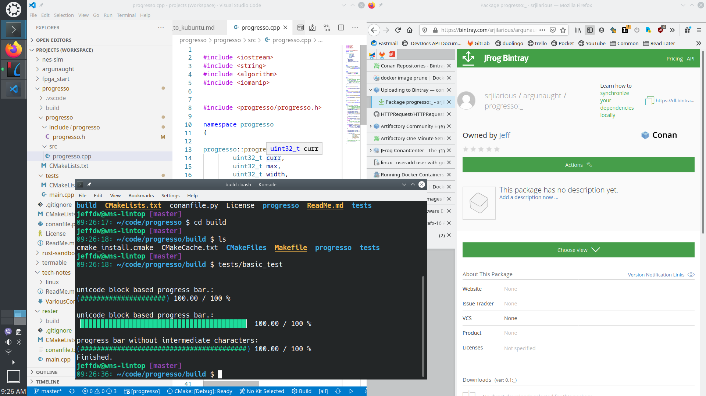

Switching to Kubuntu 20.10 as primary OS
Jeff DeWall 6 min read December 24, 2020 #LinuxAbout a week ago, I decided to give another go at using Linux as my primary OS. This came about after my brother mentioned he had recently done the same and was really enjoying it.
I've used Linux as my main OS a few times before, along with MacOS a few times as well, but I always ended up back to using Windows. Recently with WSL I had less cause to need Linux directly, but a couple of things spurred me on to reconsider.
I used to do a lot of work in Visual Studio, but have since switched to Visual Studio Code as my main development environment. This was originally one of my main reasons for staying on Windows, but since my coding interests have changed over the last few years, I don't even have Visual Studio installed any more. Their badgering you for an online account to use the community edition being a major motivation to stop using that product, by the way.
I've been using WSL2 as my main shell, which although faster, uses a lot more memory and requires keeping my repos under the WSL filesystem for it to be fast, which is sort of inconvenient.
Besides coding, most other programs I use are either browser based services, or OSS like VLC, KiCAD, etc, so switching to Linux doesn't mean having to give those up.
It also used to be that battery management on Linux would cut my system usage by a few hours, but so far on this more recent laptop, an HP Envy, it seems my battery utilization has gotten better on Kubuntu.
Finally, I used to play video games on my computer mostly, but I now prefer to play on my Switch, or one of my older consoles I've acquired such as a SNES or NES. Steam on Linux has also improved the last few years so a number of titles that I have yet to play look like they should work in any case.
Annoyances with Windows 10
Windows 10 has been overall a good system, but there are a few annoyances that have built up over the years that finally gave me pause. In particular the random upgrades that I couldn't skip indefinitelty. It's my computer, I'm an expert user and I don't need my OS determining when I'm ready to upgrade. It's sort of a slap in the face and a reversal of the roles of computer and user.
I understand that many people get viruses and that was a primary concern when the auto-upgrade feature was added to Windows 10. I personally haven't had a virus on my system in over 20 years. I also don't open random email links, go to sketchy websites or download warez, so my risk profile is pretty darn low. In any case, I keep lots of backups and much of my work is in git repos anyways so that even if I got a virus it wouldn't be the end of the world. At the end of the day, my computer is a tool that I use, and I want to be the one who determines my workflow.
I also hate that when an upgrade would occur, half the time I would be asked about some new features I had to disable or else be tracked with. On top of that, I was also not a fan of Edge being set as my default browser randomly. No upgrade should overwrite your custom settings, otherwise they're doing it wrong.
A huge annoyance with Windows 10, has been my systems randomly waking up to do some check and then not going back to sleep properly and draining the battery. This has happened on multiple systems, laptops and desktops, and no amount of searching around delivered a work around, so I had given up and just accepted an extremely annoying OS behavior.
None of these were deal breakers initially, but over time it was a realization that my computer wasn't working how I, the user, wanted it to and knowing that I had other options.
OS choice
I ended up installing Kubuntu 20.10 on my laptop, and didn't require many tweaks to get it to a perfect state for development. The UI looks great out of the box, is easy to tweak and almost eveyy package I need is available through apt.
UX tweaks
On any desktop system, there are a few UX improvements I always use and it turns out that Kubuntu had them available without much work.
I always map Caps Lock to Ctrl which in Windows requires a registry edit, but in Kubuntu is nicely exposed through a settings UI option.
I also make heavy use of a clipboard app for copied item history. Kubuntu has one installed out of the box and setting the global hotkey to what I'm used to got me up and running instantly.
Virtaul desktops are a feature I hadn't used in a long time, not having found a decent version on Windows, but on KDE I'm really liking having my various use case contexts separated into different desktops.
Cloud access
A large improvement to my workflow has been changing how I access files in the cloud.
I had been using Google Drive as cloud storage for a few documents, but it turned out there isn't a good client available on Linux. I could get access through the Dolphin file manager, but editing files would require a download to temp file, edit, and then asking to upload again cycle that was annoying.
Instead I found that Fastmail (my main email provider), exposes their Files section over Webdav. So using davfs2 I now have seamless access to my cloud files as another mounted filesystem and can interact with the files without any odd workflow.
That led me to realize I could setup sshfs as well to have seamless access to my local raspberry pi NAS files. This is actually a huge improvement for how I accessed these files compated to Windows where I always used Filezilla,
Conclusion
In conclusion, using Kubuntu 20.10, I have a perfect development environment that is faster and uses less memory for my use cases as I don't need WSL2 and its VM running. I also no longer have to deal with various Windows 10 annoyances and haven't hit any real problems with Linux so far. Finally numerous aspects such as battery life and remote files access have actually improved substantially for me.
Since the experiment has been so successful I'm very much considering dual booting my desktop system and using Kubuntu as my daily driver with Windows 10 just for the odd occasion that I want to play a Windows exclusive game.